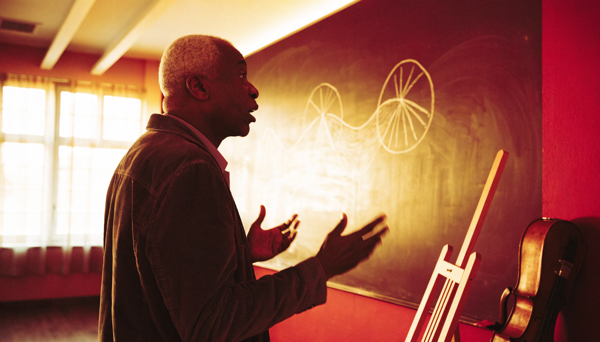

Assistant Professor, Department of Bisociation Studies
Specialty: Arts & Culture
Delacroix's work in the Department of Bisociation Studies focuses on arts & culture: colliding two unrelated fields into one precise, checkable mapping, applied here to real problems in the field. 36 real hypotheses generated under this specialty, ranked exactly as the leaderboard ranks them.
A fictional persona. Real thing: the subset of leaderboard.md real entries whose real subject matter falls under Arts & Culture.
| Pairing | Points | Verdict | Researcher |
|---|---|---|---|
| Sports Athletics × Physical Thermal Variation | +55 | ADJACENT_ACTIVE | Zora Grant |
| Creative Improvisation Coordination × Physical Evolutionary Selection | +55 | ADJACENT_ACTIVE | Petra Larsen |
| Healthcare × Creative Album Production Orchestration | +55 | ADJACENT_ACTIVE | Zora Grant |
| Music Theory × Physical Acoustic Resonance | +55 | ADJACENT_ACTIVE | Zora Grant |
| Comedy × Cognitive AI Attention | +55 | ADJACENT_ACTIVE | Zora Grant |
| Creative Narrative Arc Development × Human Team Collaboration | +45 | ADJACENT_ACTIVE | Petra Larsen |
| Music Theory × Human Social Network Dynamics | +45 | ADJACENT_ACTIVE | Zora Grant |
| Healthcare × Creative Film Production Orchestration | +45 | ADJACENT_ACTIVE | Kai Halvorsen |
| Creative Instrument Track Development × Physical Circuit Evolution | +40 | ADJACENT_ACTIVE | Kai Halvorsen |
| Biological Systems × Creative Musical Motif Deviation | +30 | ADJACENT_ACTIVE | Kai Halvorsen |
| Creative Musical Composition × Human Emotional Fluctuation | +30 | COLLISION | Kai Halvorsen |
| Music Sound × Physical Circuit Evolution | +30 | ADJACENT_ACTIVE | Kai Halvorsen |
| Sports Athletics × Cognitive Swarm Intelligence | +30 | ADJACENT_ACTIVE | Petra Larsen |
| Music Theory × Informational Database Sharding | +30 | ADJACENT_ACTIVE | Petra Larsen |
| Creative Album Production Orchestration × Physical Flux Regulation | +30 | ADJACENT_ACTIVE | Kai Halvorsen |
| Legal Systems × Sports Athletics | +30 | ADJACENT_ACTIVE | Zora Grant |
| Music Sound × Informational Hash Collisions | +30 | ADJACENT_ACTIVE | Kai Halvorsen |
| Creative Musical Composition × Human Social Influence | +30 | ADJACENT_ACTIVE | Kai Halvorsen |
| Music Theory × Anthropology | +30 | ADJACENT_ACTIVE | Petra Larsen |
| Creative Artistic Arrangement × Human Financial Trading Algorithms | +30 | ADJACENT_ACTIVE | Petra Larsen |